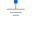

SymmetricMultiPhaseCageWindingSymmetrical rotor cage |
|
Diagram
{kind=link}
Information
This information is part of the Modelica Standard Library maintained by the Modelica Association.

The symmetric rotor cage model of this library does not consist of rotor bars and end rings. Instead the symmetric cage is modeled by an equivalent symmetrical winding. The rotor cage model consists of
 phases. If the cage is modeled by equivalent stator winding parameters, the number of effective turns,
phases. If the cage is modeled by equivalent stator winding parameters, the number of effective turns,  , has to be chosen equivalent to the effective number of stator turns.
, has to be chosen equivalent to the effective number of stator turns.
See also
SinglePhaseWinding, SymmetricMultiPhaseWinding, SaliencyCageWinding, RotorSaliencyAirGap
Parameters (8)
| useHeatPort |
Value: false Type: Boolean Description: Enable / disable (=fixed temperatures) thermal port |
|---|---|
| RRef |
Value: Type: Resistance (Ω) Description: Winding resistance per phase at TRef |
| TRef |
Value: Type: Temperature (K) Description: Reference temperature of winding |
| alpha20 |
Value: Type: LinearTemperatureCoefficient20 (¹/K) Description: Temperature coefficient of winding at 20 degC |
| alphaRef |
Value: Modelica.Electrical.Machines.Thermal.convertAlpha(alpha20, TRef, 293.15) Type: LinearTemperatureCoefficient (¹/K) |
| TOperational |
Value: Type: Temperature (K) Description: Operational temperature of winding |
| Lsigma |
Value: Type: Inductance (H) Description: Cage stray inductance |
| effectiveTurns |
Value: 1 Type: Real Description: Effective number of turns |
Connectors (3)
| port_p |
Type: PositiveMagneticPort Description: Positive magnetic port of fundamental wave machines |
|
|---|---|---|
| port_n |
Type: NegativeMagneticPort Description: Negative magnetic port of fundamental wave machines |
|
| heatPortWinding |
Type: HeatPort_a Description: Heat ports of winding resistor |
Components (9)
| V_m |
Type: ComplexMagneticPotentialDifference Description: Complex magnetic potential difference |
|
|---|---|---|
| Phi |
Type: ComplexMagneticFlux Description: Complex magnetic flux |
|
| electroMagneticConverter |
Type: MultiPhaseElectroMagneticConverter Description: Symmetric winding |
|
| resistor |
Type: Resistor |
|
| star |
Type: Star |
|
|  | ground |
Type: Ground |
| thermalCollector |
Type: ThermalCollector Description: Connector of thermal rotor resistance heat ports |
|
| strayReluctance |
Type: Reluctance Description: Stray reluctance equivalent to ideally coupled stray inductances |
|
| multiStar |
Type: MultiStar |
Used in Components (1)
|
Modelica.Magnetic.FundamentalWave.BasicMachines.AsynchronousInductionMachines
Asynchronous induction machine with squirrel cage |